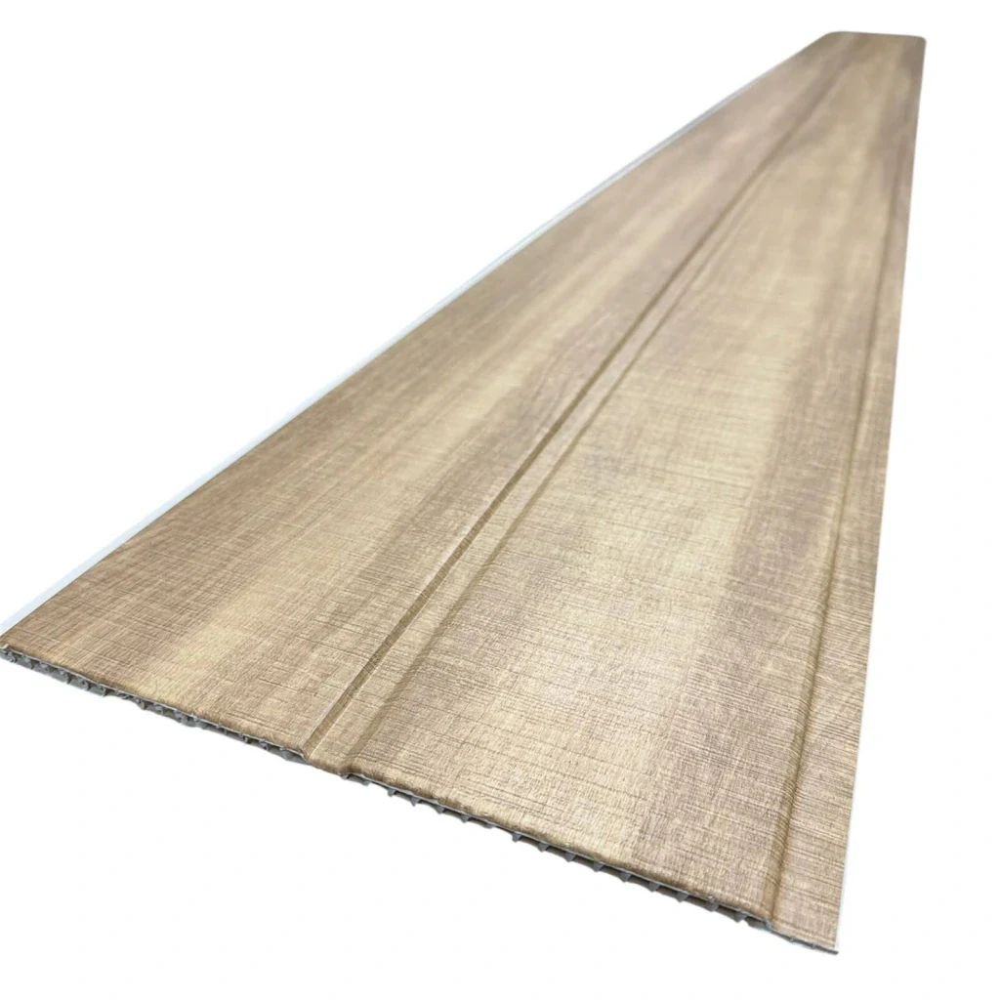

Cielorraso de PVC
Cielorraso Machimbre PVC Roble Claro 2.90 x 25CM - Caja cubre 7,2m2
Revestimiento de PVC para cielorrasos en el diseño y formato de esta publicación. Para completar la instalación, consultá los perfiles de unión y terminación compatibles. Datos del proveedor: Presentación: Caja de 1 unidades.
- Presentación
- Caja de 1 unidades
Disponibilidad FORMA: En stock
Confirmamos precio, disponibilidad y entrega antes de cerrar el pedido.
Instalación y preparación
Paso a paso para la instalación: Preparación de la superficie: asegurate de que la pared o techo esté limpia y seca. Si hay humedad, no es un problema para el PVC, pero revisá que no haya revoques flojos. Colocación de la estructura: armá una estructura reticulada de listones de madera o perfiles metálicos fijados a la pared o techo, en sentido contrario a como vas a colocar el machimbre (separados cada 40-50 cm aprox.). Usá un nivel para que quede plana y alineada. Instalación de las molduras de inicio: antes de colocar las tablas, instalá los perfiles de terminación perimetrales (esquinas, arranques y molduras de borde). Colocación del primer panel: encajalo dentro de la moldura de arranque y atornillalo o grapalo por la pestaña lateral a la estructura, sin dañar la vista frontal. Controlá con nivel que quede derecho, ya que marca la alineación de todo el revestimiento. Encastre de los siguientes paneles: insertá la lengüeta de cada panel en la ranura del anterior, presionando suavemente para un encastre perfecto, y asegurá cada uno a la estructura. Cortes y terminaciones: ajustá el último panel con sierra de mano o caladora si hace falta, y colocá las molduras de terminación finales para un acabado prolijo.